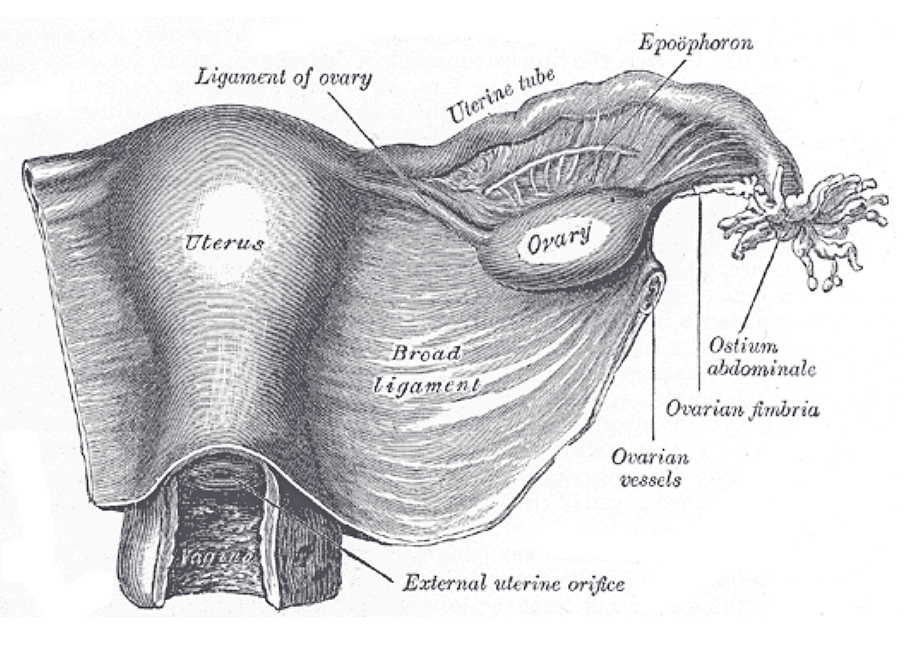

Página 3 · Parte A · Mobília
Uma estrutura prende o ovário ao útero e é avascular — secciona-se com bem menos medo de sangramento.
Duas cordas do ovário: uma avascular, uma cheia de vaso
A outra é um feixe vascular — e a banca adora quando você trata as duas como se fossem a mesma corda.
Vista dorsal: o ovário se prende em duas cordas
Em vista dorsal, o foco é como o ovário se conecta ao útero — topografia cobrada em residência. O ovário se conecta a duas estruturas distintas. A vista dorsal existe para fixar a fixação, não para reabrir osso.
Útero-ovário = avascular
Primeira conexão: ao útero, pelo ligamento útero-ovário (ligamento próprio do ovário).
Nome fácil em GO: o ligamento que liga ovário ao útero chama-se ligamento útero-ovário. E o ponto que salva mão: ele é avascular.
Infundíbulo pélvico = vascular
Do outro lado da fixação ovariana está o infundíbulo pélvico (ligamento suspensor do ovário / infundibulopélvico) — estrutura vascular. Há muito vaso importante — não tratar como corda “seca”.
Par de contraste a guardar:
- útero-ovário = avascular
- infundíbulo pélvico = vascular
(Esta distinção será reativada na questão de histerectomia: a alternativa que gruda ovário “pelas tubas” e confunde nomenclatura cai — a versão publicada é só esta.)
| Corda | Posição | Conteúdo |
|---|---|---|
| Ligamento útero-ovário | Medial (ovário → útero) | Avascular |
| Infundíbulo pélvico (suspensor) | Lateral (ovário → parede) | Vascular — feixe vascular |

Atlas clássico em vista dorsal: ovário e suas duas fixações legíveis.
Plate 1161 from Gray's Anatomy (20th ed., 1918), by Henry Vandyke Carter. Public domain. Source: https://commons.wikimedia.org/wiki/File:Gray1161.png
Quiz — fixação
Estrutura avascular entre ovário e útero:
- Gabarito B. O ligamento útero-ovário (próprio do ovário) é a corda medial avascular.
- (A) o infundíbulo pélvico é a corda lateral vascular — oposto da avascular.
- (C) artéria uterina é vaso, não ligamento de fixação do ovário.
- (D) veia ovárica é drenagem venosa, não corda de fixação.
- Por que cair em A: ambos prendem o ovário; troca-se medial por lateral e perde-se a diferença que importa na cirurgia.
No IP (suspensor do ovário), o erro cirúrgico clássico é:
- Gabarito B. O IP é vascular; tratá-lo como corda seca é o erro que provoca sangramento.
- (A) o sítio do Papanicolaou é o colo, não o IP.
- (C) sínfise púbica é articulação óssea anterior — nada a ver com o IP.
- (D) pelvimetria usa marcos ósseos, não ligamento suspensor do ovário.
- Por que cair em A: “Papanicolaou” é a âncora de rastreamento mais forte e aparece por associação fraudada.